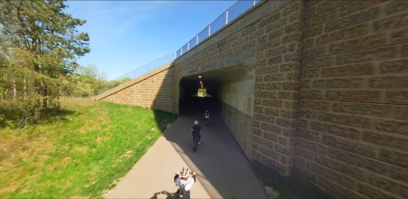

Cyc
E-Bikes
Cruise 11+ miles of the Mill Creek MetroParks bikeway on a pedal-assist e-bike. Flat, paved, and easy for every skill level. Hourly rentals, helmet and tutorial included.
Book E-Bikes
Trek
Walking Poles
Explore the bikeway on foot with Jetti weighted fitness walking poles — a bit like Nordic walking. Push into the grips and an easy walk becomes a low-impact, full-body workout that's easier on the knees. Fully self-serve: book online, grab your poles from the Trailside locker, and go. Two sizes, from $8/hour.
Launching August 2026.
Book Walking PolesNot sure which fits your group? Text the rentals desk at 330-406-9686 and we'll help you plan.